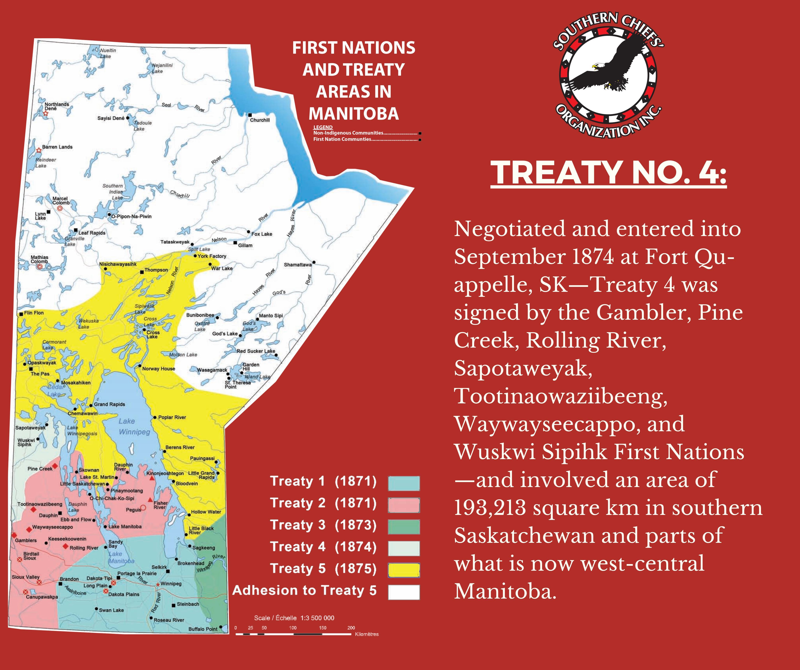
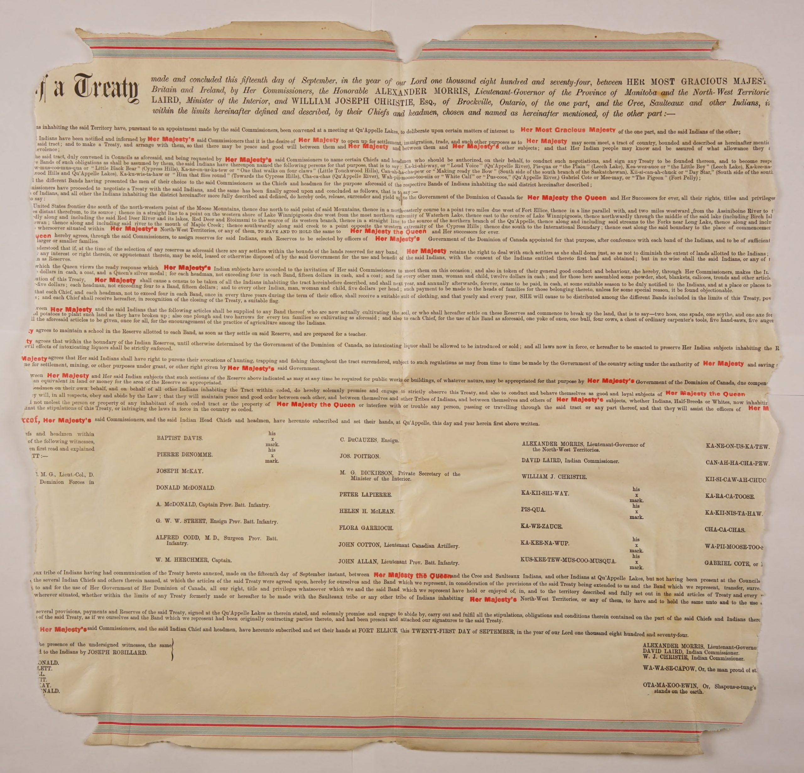
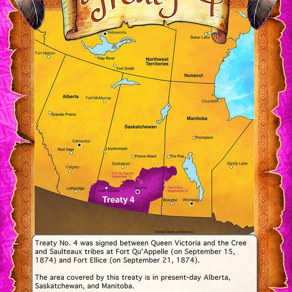
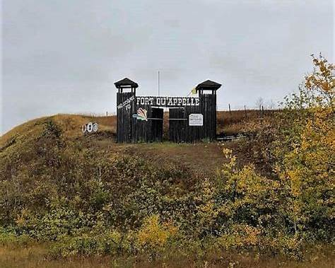
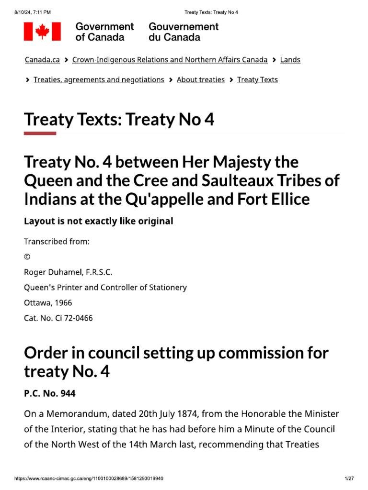

TREATY 4
Before 1870
Indigenous Nations including the Cree, Saulteaux, Assiniboine, and Nakota peoples lived across the Prairies for thousands of years. The buffalo economy, trade networks, governance systems, and spiritual relationships to the land-shaped life in the region.


1870 - Rupert's Land Transfer
The Hudson's Bay Company sold Rupert’s Land to Canada without consulting Indigenous Nations. Indigenous leaders demanded compensation and recognition because the land was already occupied and governed by their Nations.
1871-1873-Pressure for Treaties
Canada signed Treaties 1–3 and wanted western land for: settlement, agriculture, and the future railway. Buffalo populations were declining rapidly, creating food insecurity for the Prairie Nations.


September 8-15,1874-Treaty Negotiations
Negotiations took place at Fort Qu’Appelle. Indigenous leaders challenged Canada over the sale of their lands and the money paid to the Hudson’s Bay Company. Talks were delayed several times because Nations wanted clearer answers and fairer terms.

September 15,1874-Treaty 4 signed
Treaty 4 was officially signed at Fort Qu’Appelle. Commissioners representing Canada included: Alexander Morris David Laird The treaty promised: reserve lands, annual payments, farming tools, education, hunting and fishing rights, and assistance during transition periods.
1874-1877-Adhesions Added
Additional Nations joined Treaty 4 over several years: Sept. 21, 1874 — Fort Ellice adhesion Sept. 8–9, 1875 — Qu’Appelle Lakes adhesions Sept. 24, 1875 — Swan Lake adhesion Aug. 24, 1876 — Fort Pelly adhesion Sept. 25, 1877 — Fort Walsh adhesion
Late 1800s-Reserve System and Colonial Policies
Canada imposed the reserve system and later the Indian Act. Indigenous mobility, ceremonies, and governance were heavily controlled. Residential schools expanded across Treaty territories.
1885-Northwest Resistance
Tensions over land, starvation, treaty promises, and government control contributed to the North-West Resistance led partly by Métis and some First Nations communities.
1900s-Ongoing Treaty Rights Issues
Many First Nations argued that Canada failed to uphold Treaty promises regarding: land, education, healthcare, farming assistance, and self-government.
1970s-Present-Treaty Rights Recognition
Court cases and political movements strengthened recognition of Treaty rights under the Canadian Constitution. Treaty education and land acknowledgements became more common in schools and public institutions.
2024-150th Anniversary of Treaty 4
Communities across Treaty 4 territory marked the 150th anniversary with ceremonies, education events, and discussions about reconciliation and Treaty responsibilities.